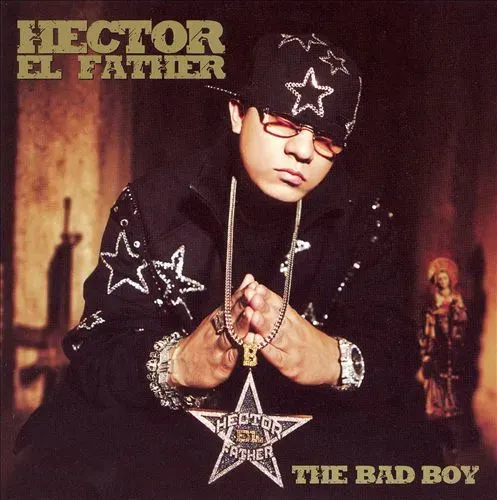
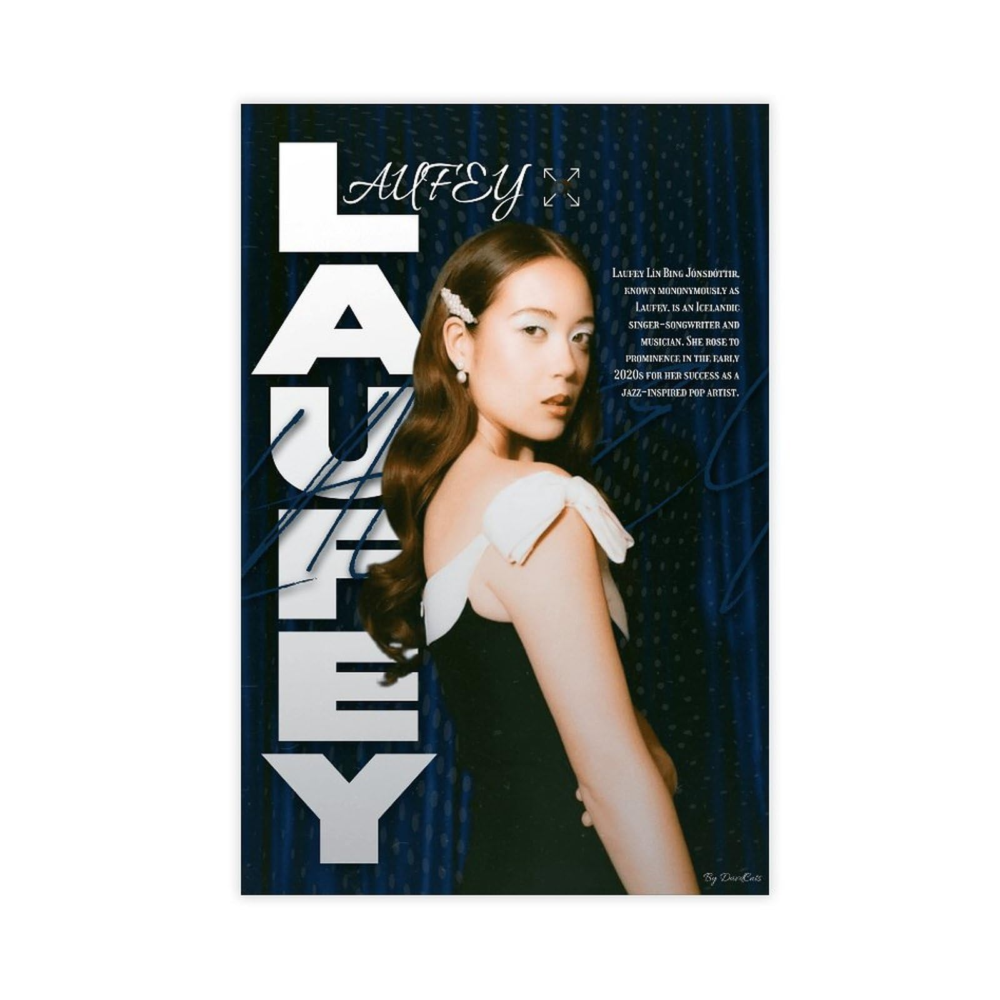
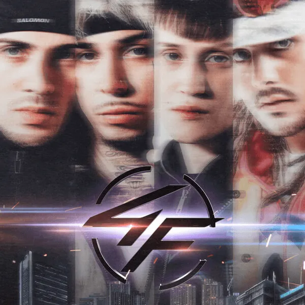

Hector El Father

Género: Reggaeton
Hector El Father, uno de los pioneros del género urbano de la Old School.
No posees conexión a internet. Revisa tu red o datos móviles.
Revisa quien suena últimamente en Regi Music.

Género: Reggaeton
Hector El Father, uno de los pioneros del género urbano de la Old School.

Género: Jazz, Jazz Pop
Laufey es reconocida mundialmente por revitalizar el Jazz en la generación Z.

Género: Trap, Reggaeton, Pop
Los 4 Fantásticos son un grupo chileno formado por Kidd Voodoo, DrefQuila, Easykid, Young Cister.

Canción más popular del grupo "Los 4 F", su último hit con 70 millones de reproducciones.